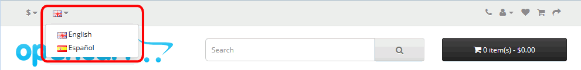

El objetivo de estos ejercicios es poner en marcha OpenCart, una aplicación de tiendas virtuales. En ellos se pide, de forma sucesiva, realizar las tareas habituales de una puesta en marcha: instalar OpenCart, comprobar que se puede acceder a OpenCart como usuario normal o como administrador, traducirlo al español y realizar tareas básicas de administración (hacer copias de seguridad y actualizar la aplicación).
Los ejercicios se deben realizar de forma sucesiva, puesto que están encadenados.
Para no tener que estar entrando y saliendo de OpenCart como administrador o como usuario registrado o no registrado, se aconseja acceder a OpenCart desde dos navegadores distintos, en uno como usuario administrador y en el otro como usuario no administrador. En vez de usar navegadores distintos, también se pueden usar varias ventanas privadas de Firefox o varias ventanas de incógnito de Google Chrome o de Edge.
OpenCart (1) 1 - Descargar
En este ejercicio se pide descargar la penúltima versión de OpenCart disponible actualmente (diciembre de 2018). Se recomiendan esta versión ya que estos ejercicios se han preparado con ella. Si se trabaja con alguna versión posterior, el interfaz y el funcionamiento de la aplicación pueden ser diferentes.
Visite la página web del proyecto OpenCart.
Descargue la versión OpenCart 3.0.2.0 (en inglés), publicada el 17 de julio de 2017.
Si no encuentra esta versión en la web del programa, puede descargarla desde la página de Descarga de aplicaciones.
OpenCart (1) 2 - Instalar
En este ejercicio se pide instalar dos veces OpenCart 3.0.2.0 (descargada en el ejercicio anterior):
Instalación para consulta: Esta instalación no se modificará y se mantendrá en inglés. Servirá para ver la tienda de ejemplo y consultar sus elementos.
Instalación para modificación: En esta instalación se realizarán todos los ejercicios sobre esta instalación. En esta instalación se realizarán también los ejercicios OpenCart (2) de creación de una nueva tienda.
Instalación para consulta
Cree con phpMyAdmin un usuario de MySQL con nombre iaw_opencart_0, contraseña iaw_opencart_0 y base de datos iaw_opencart_0.
Descomprima OpenCart en la carpeta adecuada para poder ejecutarlo en el servidor local (en estos ejercicios se supone que la carpeta se llama opencart-0)
Siga las instrucciones de instalación incluidas en OpenCart.
Instale OpenCart mediante su asistente de instalación. Estas son las opciones a elegir distintas de las predeterminadas.
Configuration
DB Driver: mPDO
Database host: localhost
User: iaw_opencart_0
Password: iaw_opencart_0
Database name: iaw_opencart_0
Username: admin
Password: admin
E-Mail: admin@example.com
Al terminar la instalación, antes de abrir nuevamente OpenCart es necesario borrar el directorio opencart_0/install.
Instalación para modificación
Cree con phpMyAdmin un usuario de MySQL con nombre iaw_opencart_1, contraseña iaw_opencart_1 y base de datos iaw_opencart_1.
Descomprima OpenCart en la carpeta adecuada para poder ejecutarlo en el servidor local (en estos ejercicios se supone que la carpeta se llama opencart)
Siga las instrucciones de instalación incluidas en OpenCart.
Instale OpenCart mediante su asistente de instalación. Estas son las opciones a elegir distintas de las predeterminadas.
Configuration
DB Driver: mPDO
Database host: localhost
User: iaw_opencart_1
Password: iaw_opencart_1
Database name: iaw_opencart_1
Username: admin
Password: admin
E-Mail: admin@example.com
Al terminar la instalación, antes de abrir nuevamente OpenCart es necesario borrar el directorio opencart/install.
OpenCart (1) 3 - Entrar
En este ejercicio se pide comprobar que OpenCart funciona y que se puede abrir una sesión como usuario administrador.
Abra la página principal de OpenCart. El aspecto tiene que ser similar a éste:
Abra la página principal de OpenCart para el administrador. El aspecto tiene que ser similar a éste:
Compruebe que puede entrar como usuario admin y contraseña admin y que puede entrar en el Panel de Control de Administración, que muestra en diferentes páginas todas las opciones de configuración de OpenCart.
Al entrar como administrador, OpenCart muestra un aviso de seguridad, en el que solicita mover el directorio de almacenamiento a un directorio cualquiera, no accesible vía web. Mueva el directorio de almacenamiento por ejemplo al directorio Mis documentos > IAW Nombre-de-alumno. A continuación borre el directorio creado en la instalación system/storage.
Cierre la sesión como administrador y vuelva a la página de inicio.
OpenCart (1) 4 - Traducir al español
En este ejercicio se pide instalar la traducción al español y configurar ese idioma para los usuarios. Antes de realizar este ejercicio, lea el apartado Gestión de los idiomas en OpenCart de la lección sobre OpenCart.
Añadir el idioma español
Busque en la web de extensiones de OpenCart una traducción gratuita al español de OpenCart 3.0.X.
Nota:
Mi experiencia con las traducciones al español disponibles en la web de OpenCart es bastante mala. Las traducciones aparecen y desaparecen continuamente y su calidad es baja. Por ello, el curso pasado, a partir de una traducción al español (de Chile) realizada por Burbuja, preparé una traducción al español de España. No es una traducción completa, pero al menos está siempre disponible. La podéis descargar de la página de descarga de aplicaciones.
Descomprima el archivo de traducción y, en su caso, siga las instrucciones incluidas en la traducción.
Copie las carpetas en la carpeta de opencart.
Nota: Compruebe que las carpetas es-es se han copiado en los dos lugares correctos.
Entre en OpenCart como administrador y cree el idioma español con estos valores:
Language Name : Español
Code: es
Locale: es_ES.UTF-8, es_ES
Status: Enabled
Sort order: 2
Configure la traducción al español como opción predeterminada tanto para el usuario administrador como para el resto de usuarios y visitantes.
Entre en OpenCart como usuario no administrador y compruebe que se puede elegir el idioma (inglés o español) en la página principal de OpenCart:

Eliminar el idioma inglés de la lista de idiomas
Nota: En estos apuntes se pide eliminar el idioma inglés para simplificar los ejercicios de creación de una nueva tienda. Si hay instalados varios idiomas, al introducir nuevos productos en la tienda es necesario introducir la información en todos los idiomas. Si sólo está el idioma español, sólo habrá que introducir la información en español.
No borre las carpetas /language/english. basta con eliminar el idioma inglés de la lista de idiomas.
Entre en OpenCart como administrador y elimine el idioma inglés de la lista de idiomas.
Entre en OpenCart como usuario no administrador y compruebe que ya no se puede elegir el idioma inglés en la página principal de OpenCart:
OpenCart (1) 5 - Copias de seguridad
Por completar con capturas
En este ejercicio se pide realizar copias de seguridad de OpenCart y restaurarlas. La tarea se puede realizar desde OpenCart (se necesita que OpenCart esté operativo) o desde phpMyAdmin (no es necesario que OpenCart esté operativo).
Copia de seguridad desde OpenCart
Realice una copia de seguridad desde OpenCart.
Elimine las categorías Desktop y compruebe que ya no se muestran en la página principal de OpenCart.
Restaure la copia de seguridad desde OpenCart.
Compruebe que las categorías Desktop se muestran en la página principal de OpenCart.
Copia de seguridad desde phpMyAdmin
Con phpMyAdmin y como usuario iaw_opencart_1, realice una copia de seguridad personalizada de todas las tablas, agregando todas las sentencia disponibles.
Elimine todas las tablas de la base de datos iaw_opencart_1 y compruebe que no se puede mostrar la página principal de OpenCart.
Con phpMyAdmin y como usuario iaw_opencart_1, restaure la copia de seguridad.
Compruebe que se vuelve a mostrar correctamente la página principal de OpenCart.
OpenCart (1) 6 - Acceder desde otros ordenadores
Acceso con alias y dirección ip desde el propio ordenador
Cree un alias para poder entrar en OpenCart mediante la dirección http://localhost/opencart/. Compruebe que puede entrar en OpenCart mediante esa dirección.
Averigüe la IP de su ordenador (AAA.BBB.CCC.DDD).
Compruebe que aparentemente puede entrar como usuario mediante la dirección http://AAA.BBB.CCC.DDD/opencart/ pero que al interaccionar con la tienda la dirección cambia a http://localhost/opencart/.
Compruebe que al entrar como administrador mediante la dirección http://AAA.BBB.CCC.DDD/opencart/admin la página no se ve correctamente.
Modifique los dos archivos de configuración para que el acceso sea a través de http://AAA.BBB.CCC.DDD/.../ y no http://localhost/.../.
Compruebe que ya puede entrar correctamente como usuario o administrador mediante las direcciones http://AAA.BBB.CCC.DDD/opencart/ y http://AAA.BBB.CCC.DDD/opencart/admin.
Acceso con alias y dirección ip desde otro ordenador perteneciente a la misma red o desde una máquina virtual en el mismo ordenador
Si en el ordenador B desde el que va a comprobar si se puede entrar en el OpenCart instalado en el ordenador A hay un OpenCart instalado, detenga el servidor Apache del ordenador B. Es conveniente hacerlo para asegurarse de que el OpenCart que se está viendo desde el ordenador B es el del ordenador A y no el del ordenador B o una combinación de ambos.
Compruebe que puede entrar correctamente en OpenCart como usuario o administrador mediante las direcciones http://AAA.BBB.CCC.DDD/opencart/ y http://AAA.BBB.CCC.DDD/opencart/admin.
OpenCart (1) 7 - Actualizar
En este ejercicio se pide actualizar OpenCart.
Visite la página web del proyecto OpenCart.
Descargue la versión OpenCart 3.0.3.2 (en inglés), publicada el 9 de abril de 2019. Se recomienda esa versión ya que estos ejercicios se han preparado con ella.
Si no encuentra esta versión en la web del programa, puede descargarla desde la página de Descarga de aplicaciones.
Descomprima el fichero descargado en una carpeta y siga las instrucciones de instalación incluidas en OpenCart
Actualice también la traducción de OpenCart al español. Puede descargarla desde la página de Descarga de aplicaciones.
 Al entrar como administrador, OpenCart muestra un aviso de seguridad, en el que solicita mover el directorio de almacenamiento a un directorio cualquiera, no accesible vía web. Mueva el directorio de almacenamiento por ejemplo al directorio Mis documentos > IAW Nombre-de-alumno. A continuación borre el directorio creado en la instalación system/storage.
Al entrar como administrador, OpenCart muestra un aviso de seguridad, en el que solicita mover el directorio de almacenamiento a un directorio cualquiera, no accesible vía web. Mueva el directorio de almacenamiento por ejemplo al directorio Mis documentos > IAW Nombre-de-alumno. A continuación borre el directorio creado en la instalación system/storage.